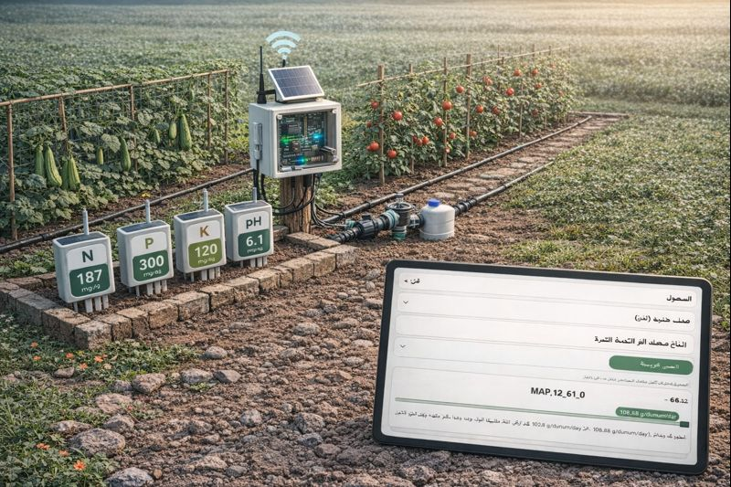
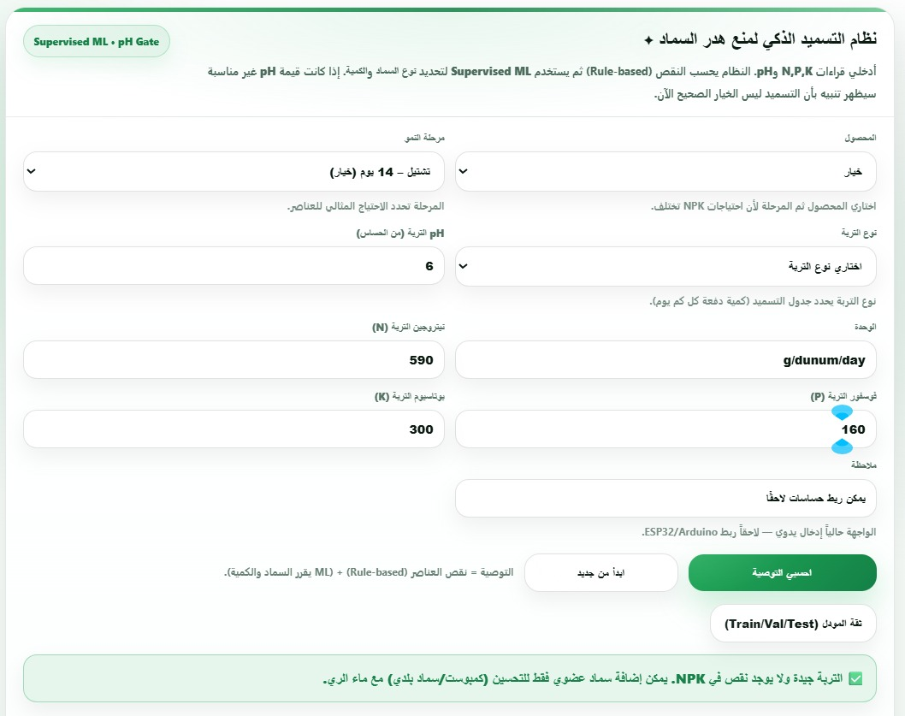
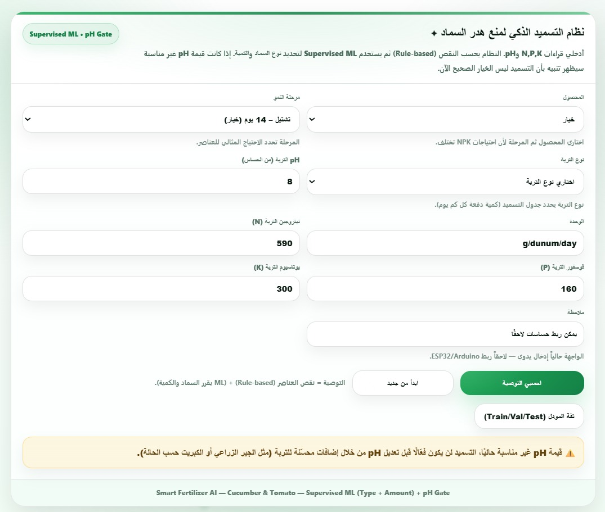
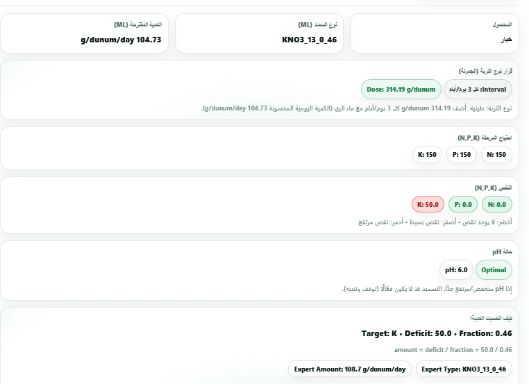

Smart Fertilization Assistant • Web Slides
🌿 Project
Smart Fertilization Assistant
A smart assistant to reduce fertilizer waste and improve fertilization efficiency in
Palestine.
Key Questions
- How should fertilization be done?
- Which fertilizer type and how much?
- At which plant growth stage?
What We Deliver
- Data-driven recommendation (type + amount)
- Designed for limited and costly inputs
- Simple web demo (MVP)
🍃 The Problem
The Problem
Constraints + uncertainty turn fertilization into guesswork.
Reality on the Ground
- Occupation restrictions on agricultural inputs (including fertilizers)
- Harder access to suitable fertilizers with unstable prices
- Many farmers lack the correct decision (amount / type / timing)
- Crop yields reported to drop by ≈ 40% in some cases
Impact
- Higher cost + fertilizer waste
- Lower yield and quality
- Long-term soil and environmental harm
🌱 Why Soil Matters
Why Soil Matters
Soil status is the foundation of a correct fertilization decision.
Why?
- Soil is the plant’s main nutrient source
- Any soil imbalance directly affects production
- You can’t fertilize correctly without knowing what the soil lacks
Our Focus
- Translate soil readings into an actionable recommendation
- Clear decision instead of generic advice
- Core nutrients: N, P, K
🌿 NPK
Understanding N, P, and K
Three essentials — a single deficiency can change everything.
N • P • K
- N: vegetative growth (leaves & stems)
- P: root strength and early development
- K: fruit quality and resilience
Takeaway
- One missing element can limit the entire plant
- We target the real deficit (not “one-size-fits-all”)
- Better decisions = less waste
🍀 The Idea
The Idea
Fertilization depends on multiple factors — the system must understand the full context.

🌱 How It Works
How the System Works
One interface: input → analysis → recommendation.
🧮 Equation
Soil Deficit Calculation
A single equation to quantify deficit (not the final decision).
Deficit = max(0 , Ideal − Soil)
🤖 AI Method
AI Method
The models used to run the program.
Classification
Regression
🧪 Example
Example 1
No fertilization needed (soil is sufficient).

⚠️ Example
Example 2
High pH detected — fertilization is blocked.

🧪 Example
Example 3
High Potassium Deficit (K).
Input (Soil Status)
.png)
System Output

🌍 SDGs
Sustainable Development Goals
Sustainability outcomes supported by the project.
Goals Supported
- SDG 2: Zero Hunger (better yield & quality)
- SDG 6: Clean Water (less fertilizer runoff/leaching)
- SDG 12: Responsible Consumption & Production (less waste)
- SDG 13: Climate Action (reduced environmental footprint)
- SDG 15: Life on Land (soil health and protection)
- SDG 8: Decent Work & Economic Growth (support farmer income)
In Practice
- More accurate recommendation = less waste
- Healthier soil over time
- Better resource efficiency under scarcity
🚀 MVP
MVP & Future Work
What we built now — and what comes next.
MVP
- Prototype to prove feasibility
- Web demo + type/amount prediction
- Designed to integrate sensors later
Next
- QAOA quantum computing
- More crops and scenarios
- Model improvement with more data
🤝 Team
Created By
Hala Elayyan and Hala Awwad.

Eng.Hala Elayyan

Eng.Hala Awwad
Use ← → keys • Press F11 for full screen